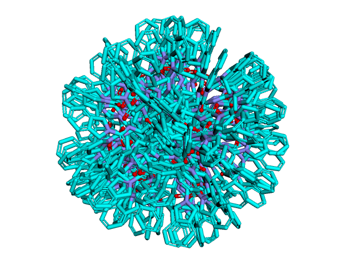

Ligand overlay 1: using quaternions for rotation in python
Notebook on github - Step 1 rotating with quaternions
The twin pillars of structure-based drug discovery are 1) docking (fitting test ligands into a known binding site), and 2) ligand overlay (fitting test ligands into the shape of a known ligand). The academic literature seems to focus on machine learning approaches to virtual screening, using ML based on fingerprints or molecular graphs. But docking and ligand overlay, which were originally developed in the 90s (!), have already shown good results over the previous two decades. They may get less attention in the literature today because, as a result of their success, the developers moved into industry. See Blaze (overlay), ROCS (overlay), or Glide (docking).
I've been determined to implement one of these approaches in an open-software way for months, but the implementations are licensed, obscured as trade secrets or, due to historical reasons, written in fortran. While fortran is great, it doesn't fit into modern drug discovery pipelines easily and it would be nice to have a python option. Docking and ligand overlay share a lot of properties, but ligand overlay seems like the simpler place to start since the protein is absent, meaning there are fewer parameters to deal with.
A reasonable roadmap to implementing a ligand overlay pipeline might look like this:
- (This post) Figure out how to handle molecule rotations using quaternions, which have some advantages over rotation matrices
- Align molecules by their principal moments of inertia, which is typically close to the global minimum of volume overlap
- Calculate molecular volume, as well as volume overlaps. Hard-sphere, Gaussian, or solvent-excluded volumes?
- Optimize the overlap function between two molecules using gradient-descent or some evolutionary algorithm like CMA-ES
- Validate on some high-throughput screening data or the DUD-Z validation set. This approach should also be compared to molecular fingerprits or alignment-free shaped-based descriptors to show improvement
- Optimize timing
The first step - quaternions - is simple enough in practice, but isn't commonly taught in undergrad maths. Luckily, it's common in computer graphics so there's lots of information and some python libraries that demonstrate how it works. The advantage of using quaternions instead of a rotation matrix is that they have gradients without singularities, it's straightforward to interpolate between two rotations, and multiple rotations can be stacked by multipling quaternions (a computationally cheaper operation than matrix multiplication).
See the notebook above for some functions that demonstrate how to use quaternions in python. These just use numpy, so should be differentiable using JAX. Later, they will be utilized to optimize the overlap between two molecules. As a sanity check, they are also used to create the following graphic of random molecule rotations. Looks like it works!
